Sölden
2027
Hoger, kouder, sneeuwzekerder. Na Saalbach gaat de geng de Ötztal in: twee gletsjers, 144 km piste en een huisje met sauna. Deze keer met alle pezen intact.
tot vertrek op donderdag 4 februari 2027
Het gebied
Sölden kwam uit Danny's wintersport.nl-filter: hoog, niet vlak, medium tot groot en relatief veel blauw. Gurgl was de andere kandidaat; Pascal koos Sölden.
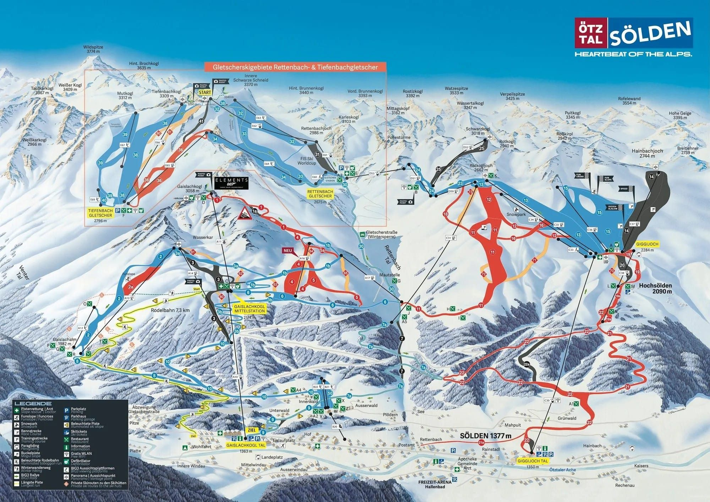
Twee gletsjers (Rettenbach en Tiefenbach), drie toppen boven de 3.000 meter en een dal op 1.350 meter. Wie boven de Giggijoch blijft, zit de hele dag op 2.000+ — precies wat Igor wilde na de papsneeuw bij de dorpsliften van Saalbach. Het snowpark Area 47 ligt bij de Giggijoch: Stijns funpark, al ligt er mos.
Op de Gaislachkogl (3.058 m) zit 007 Elements, het James Bond-museum. Stijn is er al geweest, dus dat slaan we over. Zegt Stijn.
De afvallers
Wat er in de groepsapp voorbijkwam voordat het Sölden werd. Klik voor groot.
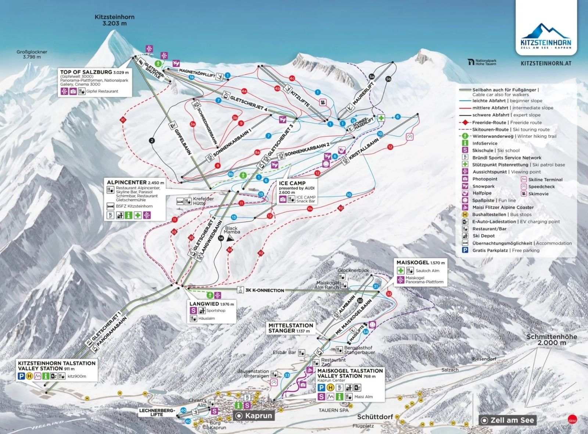
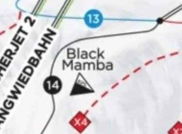
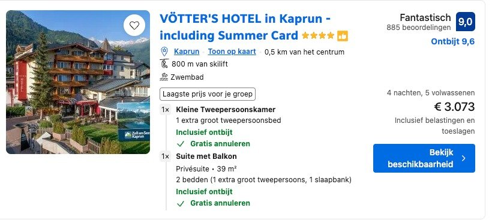
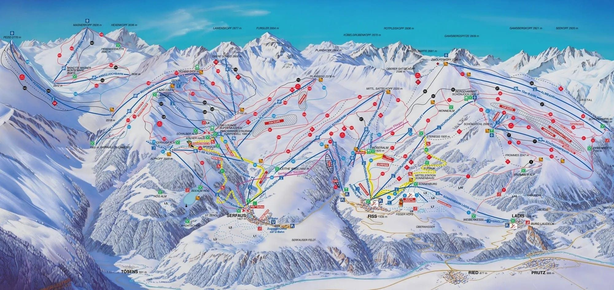
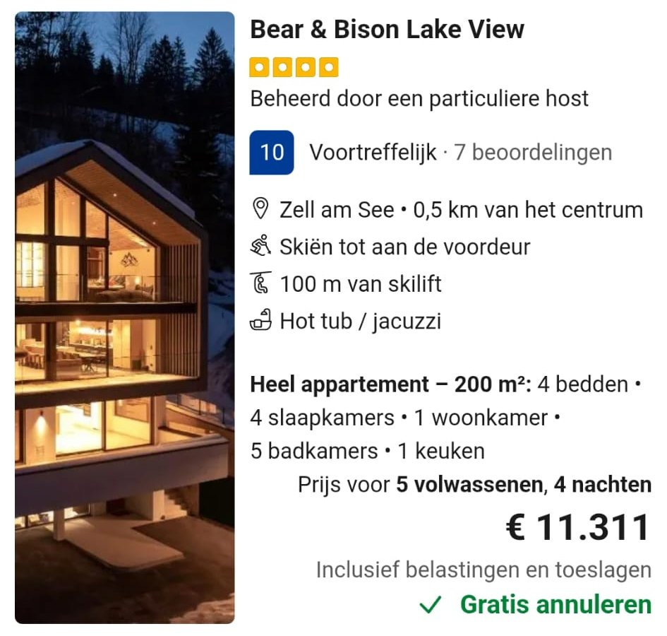
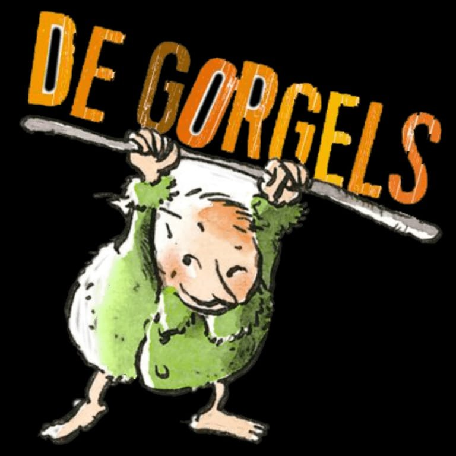
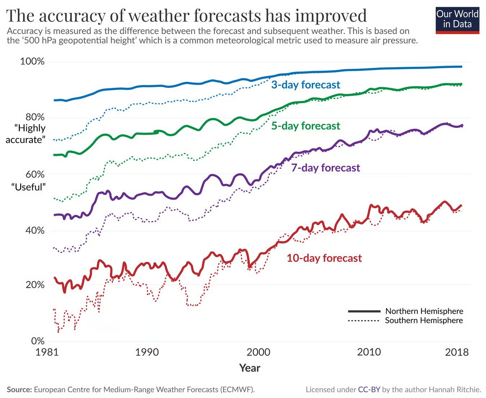
Het eisenpakket
Iedereen had één eis. Sölden vinkt ze allemaal af.
IgorHoger
Betere sneeuw. Bij de liften in het dorp was het in Saalbach snel pap. Sölden: gletsjers tot 3.250 m.
✓ 3.250 mStijnFunpark
"Ik wil gewoon een funpark. Al ligt er mos." Snowpark Area 47 bij de Giggijoch, en dit keer níet op de eerste dag.
✓ Area 47DaanBreed & blauw
Brede blauwe pistes (fijn voor boarden), niet te ver rijden, en "goed duur". 70 km blauw, 840 km, en ja: het is duur.
✓ 70 km blauwDannyAlles best
"Zolang jullie het maar eens worden." Leverde ondertussen wel het filter dat Sölden opleverde: hoog, niet vlak, veel blauw.
✓ filterPascalGoed skiën
"Als het maar goed skiën is en geen methadonkliniek." Koos Sölden, boekte het huisje, houdt dit jaar alle pezen bij zich.
✓ geboektHet huisje
Op 11 juli geboekt door Pascal, nog voordat de groepsapp klaar was met stemmen. Danny: "Don't ask for permission, ask for forgiveness."
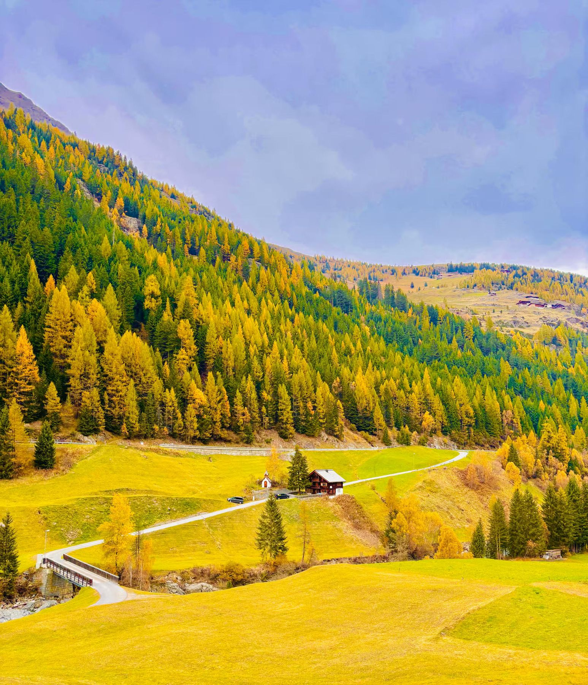
Chalet in Sölden, met sauna
Vier echte bedden (twee queensize, twee eenpersoons) plus twee grote banken op de verdieping: iedereen een bed, geen slaapbank-loterij zoals in Saalbach. Sauna erbij — "iedere dag aan na het skiën", aldus Daan.
De skibus stopt op 150 meter en brengt je naar de gondels; wie naar het grote gebied wil, zit dus even in de bus. Pascal: "Meestal wel gezellig op de terugweg, zingen in de bus in ski-gear." Parkeren voor de deur. Het adres staat gepind in de groepsapp.
Het alternatief€2.167, skatepark voor de deur
Goedkoper en vlak bij de lift, maar te weinig bedden. Pascal: "Wat mij betreft die cottage. Meer kamers en iedereen een bed." Danny stemde voor; Daan: "Mega romantisch 🥰. Koop het."
Staat het er nog?Ja
Eind juli kwamen er beelden uit de Ötztal voorbij. Daan: "Staat ons huisje er nog?" Het lag 16 km verderop; Pascal stuurde de host een berichtje. Antwoord: alles in orde. "Nice work detective."
BuurmanRotes Kreuz Ortsstelle Sölden
Zit om de hoek. Stijn: "Heb jij daar zeker rekening mee gehouden, Pascal?" Pascal: "Haha funny."
Het detectivewerk
Boeking, route en de vraag of het er eind juli nog stond. Uit de groepsapp, in volgorde.
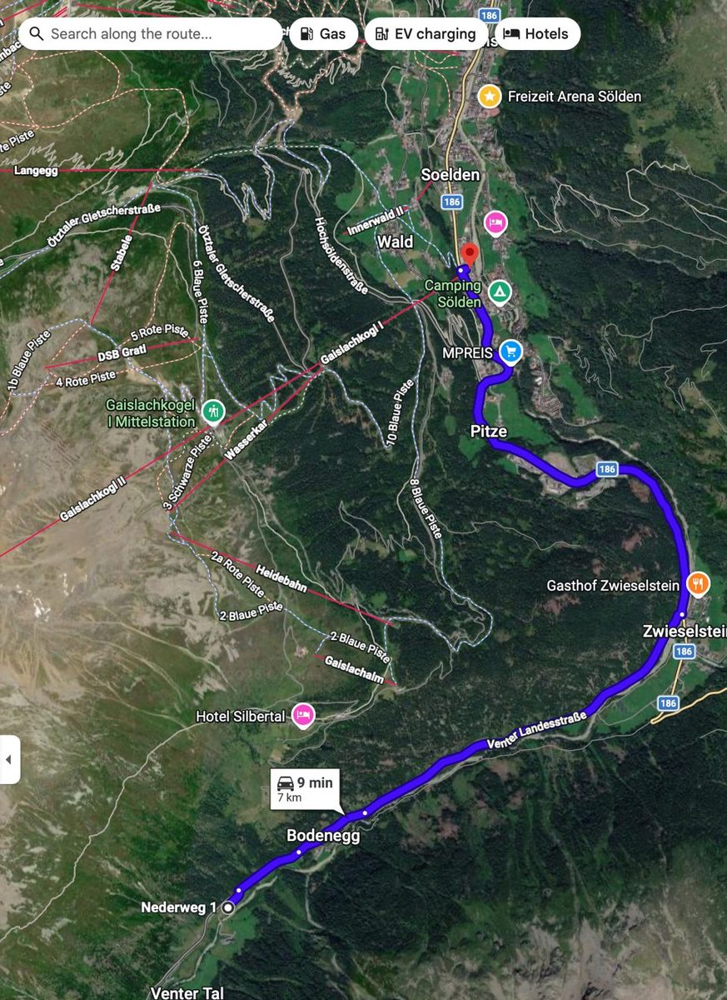
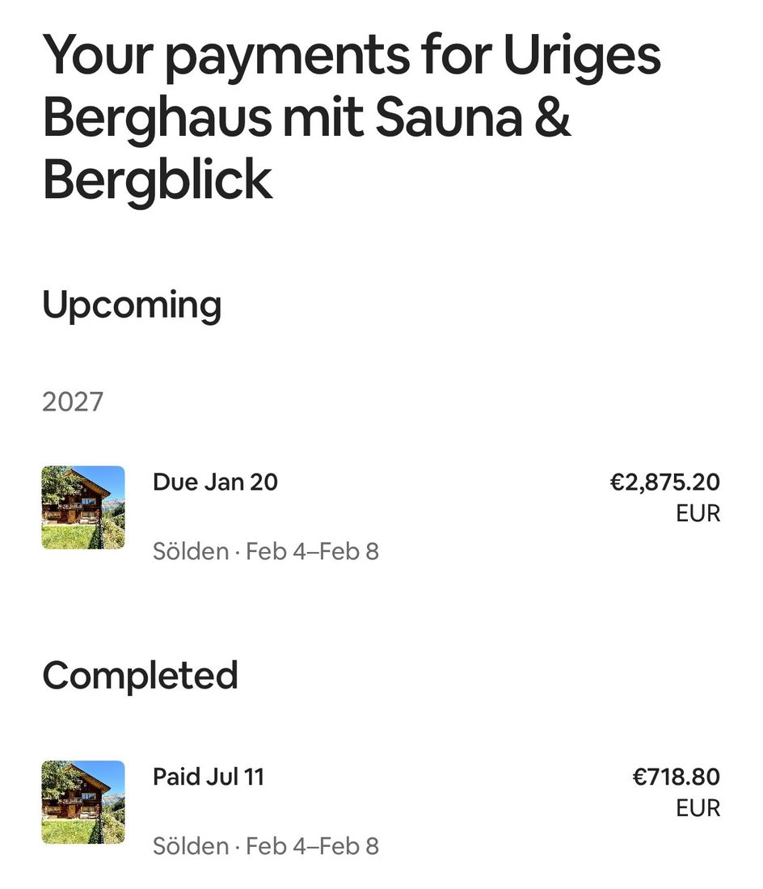
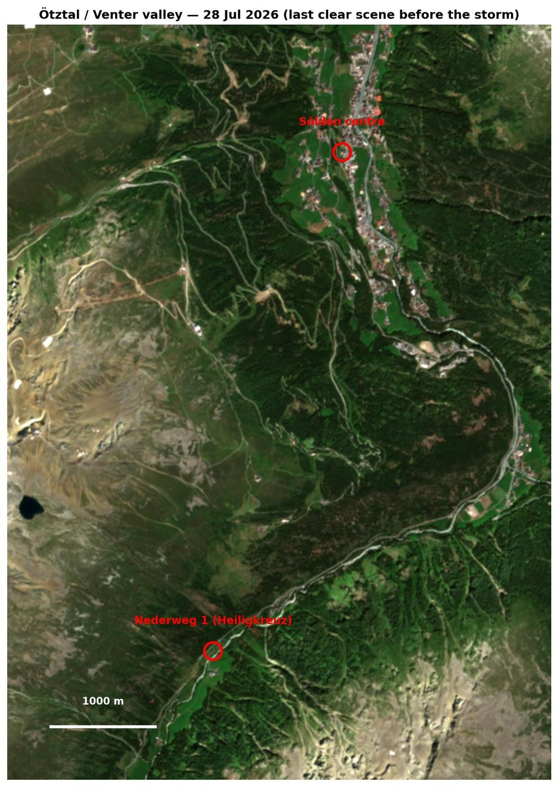
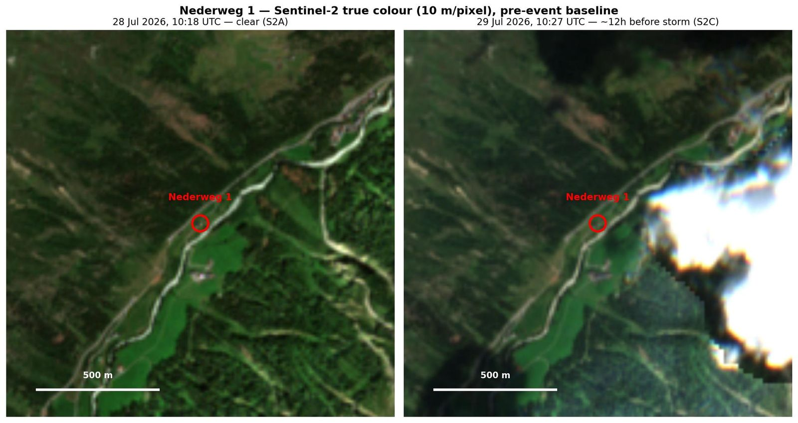
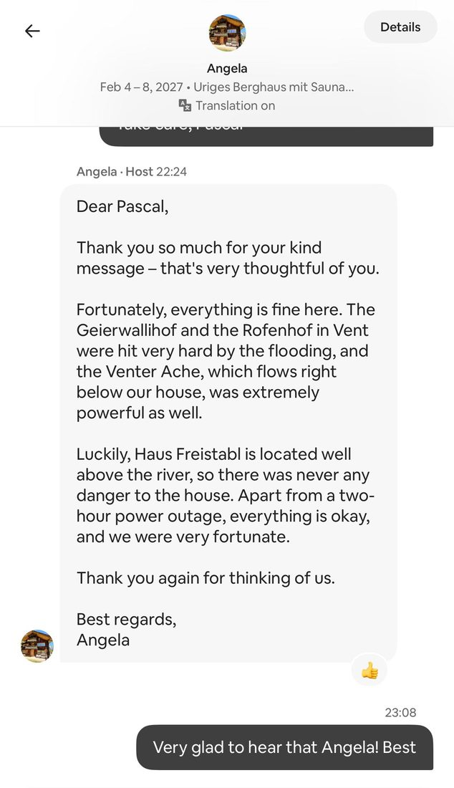
De weg ernaartoe
840 kilometer. "Zes uur met Daan achter het stuur" (Pascal) of "negen uur" (Stijn). De waarheid ligt ergens op de A3.
VervoerTwee eigen auto's
Daan rijdt; Stijn zet winterbanden onder de Renault. Scheelt centjes én "dan hoeven we niet in een Peugeot" — de huurauto van 2026 wordt niet gemist. Igor: "Auto was prima, meeste zet mee. En dit jaar kan ik vast ook rijden."
VertrekDo 4 feb, of de nacht ervoor
Stijn overweegt in de nacht van 3 op 4 februari te vertrekken met wie ook eerder kan: "Ik heb 14 uur met jankende kinderen in de file in Frankrijk gereden, dus dit is peanuts." Pascal: "Akkoord."
AankomstHalve dag shredden?
"Als we vroeg vertrekken kunnen we nog een halve dag shredden. Maar dat is een utopie." — Stijn, realist.
TerugMa 8 feb
Vier nachten, drie volle skidagen. Wie een tand of pees kwijtraakt, mag voorin.
Lessen van Saalbach
Wintersport 2026 was een topweek. Dit nemen we mee.
- Boek het aantal nachten dat je ook echt blijft. Het appartement stond voor drie nachten, de trip duurde vier. Laatste nacht: wellnesshotel met zwembad. Danny: "Ik maak die fout niet nog eens." Stijn: "Zelfs met misverstanden uitmuntend opgelost."
- Alle snurkers in de woonkamer. Daan ronkte al voordat hij sliep; Igor wilde in de badkamer slapen. Stijn is verrassend genoeg een hele stille slaper.
- Eerste dag niet tot het gaatje. "En meer koffiepauzes." — Stijn, na een week spierpijn en een stuitje dat pas in juni geheeld was.
- Materiaal online huren. Ter plekke is duurder, ontdekte Igor op dag één. Dit jaar vooraf regelen.
- Hoger is beter. Bij de dorpsliften werd het snel pap. Vandaar: gletsjers.
- Stijn maakt het ontbijt. Zijn brekkie was Daans top-2 moment van de hele vakantie. "Gewoon gezellie." Stijn is nu officieel chef; Daan doet de eitjes.
- Zwembad op de laatste dag: zalig. "Met die vermoeide beentjes het zwembad in." Het huisje heeft een sauna, en Stijn neemt een zwembroek mee.
- Tand en achillespees thuislaten. Pascal verloor op dag één een tand (tandarts op 7 minuten lopen) en scheurde op dag drie zijn achillespees — en skiede door. "Ik zal dit keer ook niet meteen m'n eigen tand verliezen of m'n achillespees doorscheuren."
- Live locatie delen. "Pascal is kwijt." "Ik zit achter jou." Iedereen z'n eigen journey, maar wel met locatie aan.
- Geen laptop mee. Stijn tegen Pascal: "Zal fijn zijn dat je je gewoon bij de groep houdt. En je mag ook geen laptop mee." Glasvezel-wifi of niet.
Nog te regelen
Het grote werk is gedaan. Dit is de rest, in volgorde van paniek.
- Data prikkenDo 4 – ma 8 feb 2027. Danny heeft Inge op de hoogte gebracht.
- Gebied kiezenIschgl → Kaprun → Serfaus → Sölden. Igor wilde hoger, Igor kreeg hoger.
- Huisje boekenPascal, 11 juli. Gratis annuleren t/m 5 januari.
- SkipassenDrie of vier dagen Ötztal. Vorig jaar zat de pas in het pakket; nu los.
- Materiaal hurenOnline, vooraf — les 4. Ski: Danny, Pascal. Board: Daan, Stijn. Igor: hybride, beslist ter plekke.
- Auto's & winterbandenDaan + Stijns Renault. Sneeuwkettingen? Igor: "Ketting en zijn wel handig ja."
- SlaapindelingSnurkers in de woonkamer. Wie dat zijn is bekend.
- Boodschappen & brekkieFull english breakfast op dag één (Stijn). Eieren, spek, dikke sloot koffie. Zaanse mayo in de tube.
- OefendagenDaans winterschema: Landgraaf (inkomen) → Winterberg (2 dagen) → Bottrop (oefenen en pils) → Oostenrijk.Voorseizoen
- SpaarpotDaan: €100 per maand automatisch, "dan is je vakantie gratis". Danny: €400 plus 1,4% rente die compoundt. Stijn zette €500 vakantiegeld apart; een week later stond er een motor op de foto.Lopend
- AftermovieStijn: "Ik ga helemaal niks filmen. Alleen shredden." Daan: "Akkoord." Dus: Danny filmt.
Het spaarplan in beeld
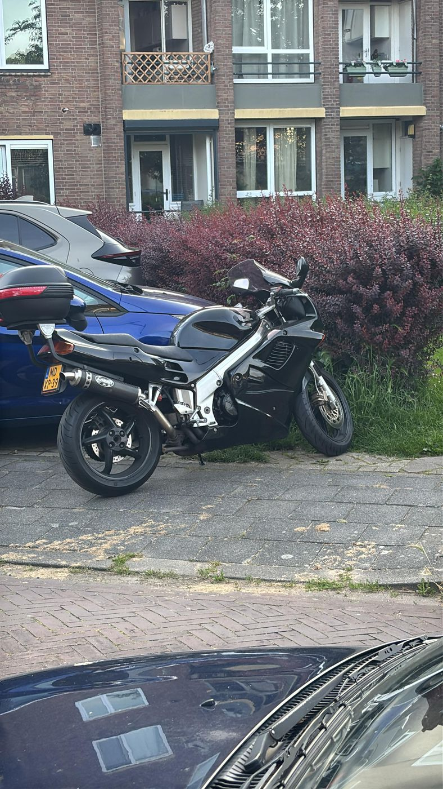
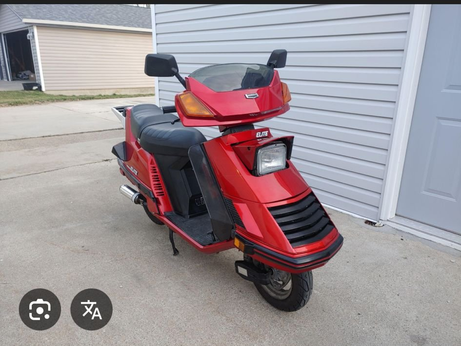
Hoe het zover kwam
Van "mosterd na de maaltijd" tot een geboekt huisje in vijf maanden.
De geng
Vijf vaste man, een huisje voor zes, en een reservebank.
Thomas houdt van 35 graden en is dus onwaarschijnlijk, maar de slee staat klaar.